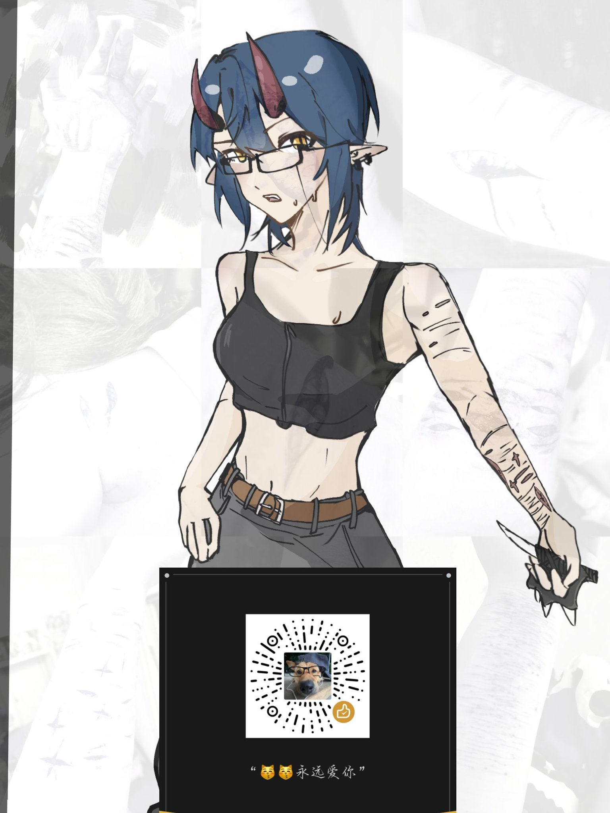
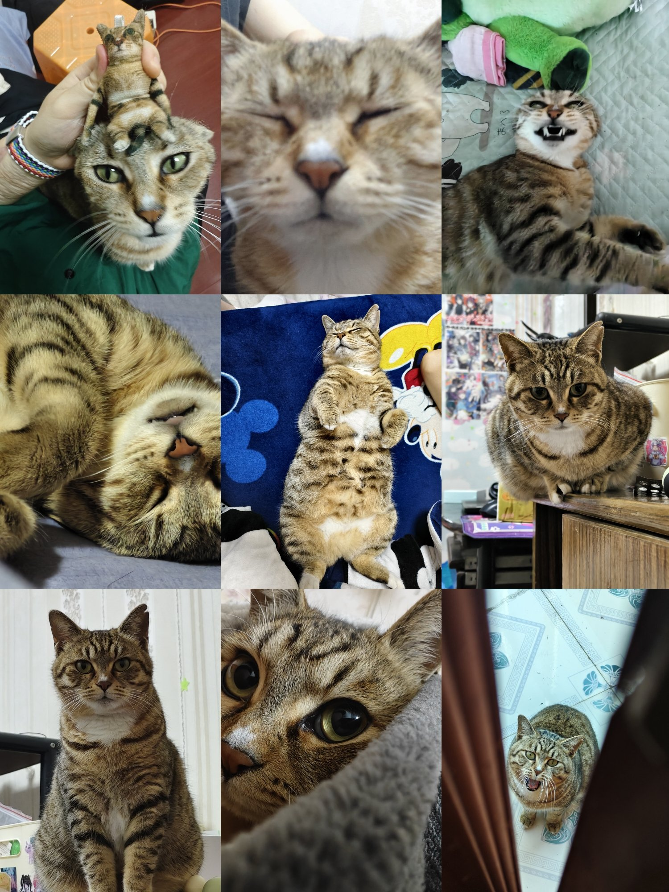
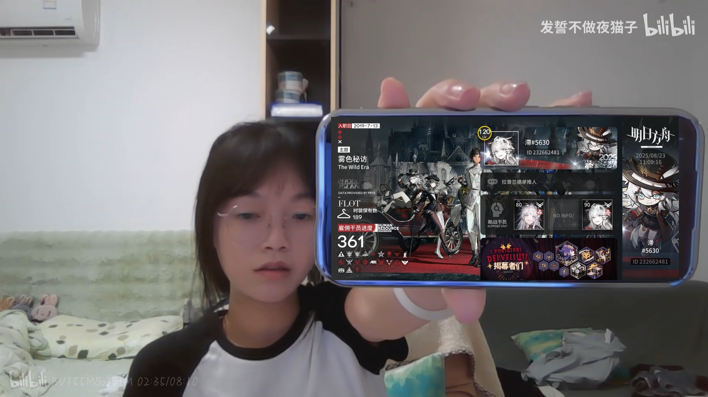

西南全球加速器
@nixyng246039
RT @xiaozhi_0801: 前5️⃣世已死，再度超生！！
你好!我是滞/小滞 07 lesb
紫餐歐弟負能⚠️⚠️⚠️
我有一隻很可愛的小貓咪咪
明日方舟/終未地/光遇/洛克王國/MC
聽國藥比較多 很喜歡回春丹和doudou 會書一點書彈一點雷吉他
是那種愛胡亂回…



滯⁶
@xiaozhi_0801
前5️⃣世已死，再度超生！！
你好!我是滞/小滞 07 lesb
紫餐歐弟負能⚠️⚠️⚠️
我有一隻很可愛的小貓咪咪
明日方舟/終未地/光遇/洛克王國/MC
聽國藥比較多 很喜歡回春丹和doudou 會書一點書彈一點雷吉他
是那種愛胡亂回復的人(?
希望能和大家一起玩呀 歡迎互fo🥺🥺🥺 https://t.co/1EjNk1sY7o